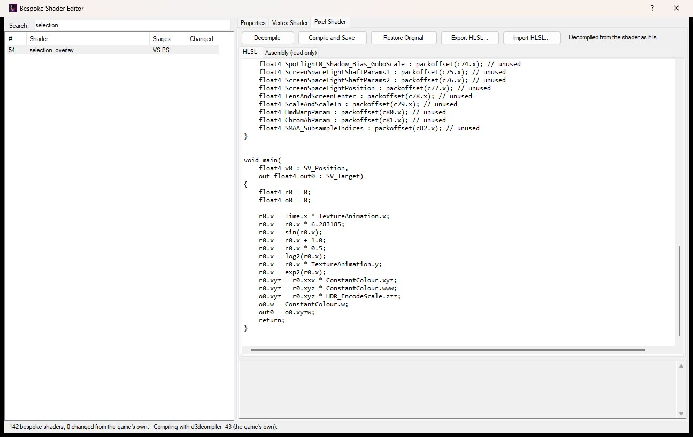
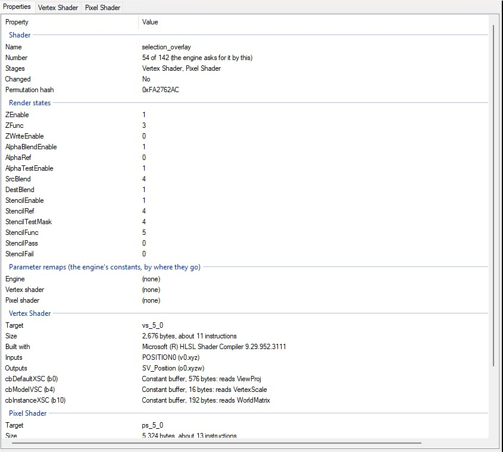
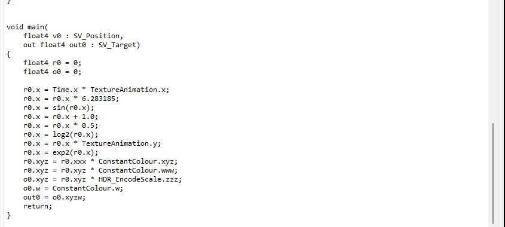
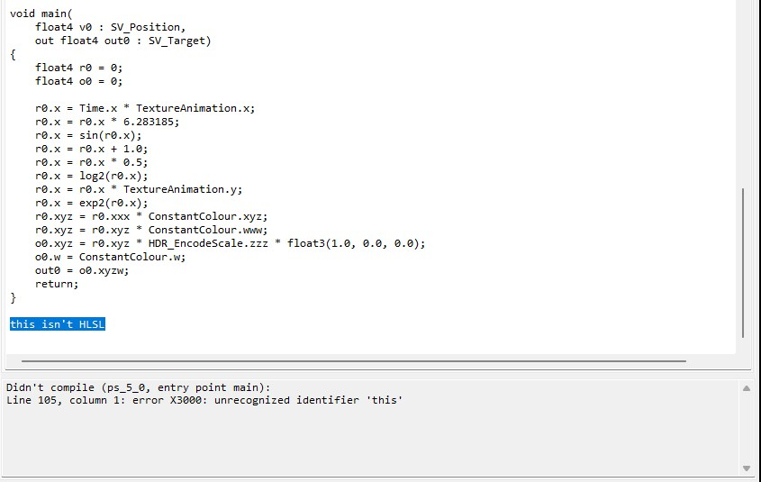

Most of what the game draws uses its ubershaders: big shaders that a material picks a permutation of, through the features you set in the Material Editor. Alongside them the engine has 142 bespoke shaders: ordinary, one-off shaders written for a particular job, such as anti-aliasing (SMAA and FXAA), depth of field, ambient occlusion, light shafts, GPU particles, the debug overlays and the highlight on things you can interact with. They live in DATA/SHADERS/UBERSHADER/BESPOKESHADERS_DX11.PAK, with its _BIN and _IDX_REMAP files.
Open View → Bespoke Shader Editor to browse them by name, see their properties, and decompile any of them to HLSL, edit it and compile it back into the game. It doesn't need a level loaded.

The shaders on the left, the selected one's pixel shader as HLSL on the right.
Shaders can't be added or taken away: the engine asks for each one by its place in the file, so a new one would never be used and a missing one would crash the game.
The list shows every bespoke shader with its number in the file, its name and its stages: VS (vertex), PS (pixel), GS (geometry) and CS (compute). Type in the search box to narrow it by name. Changed says Yes for a shader that differs from the game's own, and the line along the bottom counts them and names the compiler that will be used.
Select a shader to see its Properties tab and a tab for each of its stages.
The Properties tab shows what the game's file says about the shader, for reference:
ps_5_0), size and number of instructions, the inputs and outputs it takes, and every constant buffer, texture, sampler and buffer it reads, with the variables it uses from each constant buffer.
Each stage's tab has the stage decompiled to HLSL, ready to edit, and an Assembly tab showing the compiled shader as it is now, read only. Below them, a box shows what the compiler said. Along the top:
What you type is kept while you look at other shaders, and the window asks before it closes if you have HLSL you haven't compiled.
The game's shaders still carry the names they were written with, so the decompiled HLSL declares their constant buffers, textures, samplers and buffers under their own names and at their own registers, and what the shader reads shows by name: Time.x, ConstantColour.xyz, gpuConsts.timeDelta. The working values are kept in registers named as the compiled shader has them, r0, r1 and so on, with the outputs in o0, o1... which are handed to the shader's outputs before it returns. A register that ever holds whole numbers is a uint4 and the rest are float4, and work on whole numbers or bits goes through asint, asuint and asfloat, so every value keeps its exact bits. A shader decompiled and compiled again without changes does what the original did, and with the game's own compiler more than half of them come out byte for byte the same as the game's.

selection_overlay's pixel shader, decompiled.
The decompiled code follows the compiled shader instruction by instruction, so it reads more like careful assembly than the original source would. Change what you need to - a colour, a constant, a step - and leave the rest as it is.
Compile and Save compiles the HLSL for the stage's own target (such as ps_5_0), with main as the entry point. If the game's own compiler (d3dcompiler_43.dll, installed with the DirectX runtime) is on your computer it's used, so a shader you rebuild comes out as close to the original as it can; otherwise Windows' own d3dcompiler_47.dll is, which the game runs just as well.
If the HLSL doesn't compile, the compiler's errors show in the box below with the line they're on, and nothing is saved:

If it compiles, it's saved straight into the game's files and the shader shows as changed in the list. Saving closes Alien: Isolation if it's running. Before it saves, the new shader is checked against the original: the game sets each shader up the way the original takes its inputs, constants and textures, so if yours takes them differently - a new texture, an output that's gone - you're told what differs and asked whether to save it anyway.
Restore Original puts the stage back as the game shipped it, saves, and decompiles it again. The game's own copy comes from what the Mod Manager keeps of its files; if it doesn't have one (if the file was already changed before OpenCAGE kept it), the stage goes back to how it was when you opened the window instead, and the list's Changed column compares with that too. When every shader is back as the game shipped it, the three files are the game's own again, byte for byte.
Export HLSL saves the stage's HLSL, as it is in the editor, to a .hlsl file, to edit in another program or keep. Import HLSL reads one into the editor in place of what's there; it isn't saved into the game until you use Compile and Save.
main's inputs and outputs as they are. They're how the shader connects to the stage before it and the render targets after it.